问答页输入框收成一行，设置页按 OMP 目录选模型
已定（会话里）：输入框加推理档、模型、上下文大小，+ 打开引用菜单（与 @ 相同），不做附件；模型目录用 OMP 包自带的那份，另能自定义服务商；作答默认 Markdown、结构化可选。
稿子是在 nb-story 的生产构建里改出来的（草稿 worktree，不合并）：真实的 nbstory serve、样例书、本机脚本端点当模型，所以对话、引用小块、过程摘要都是真的；模型列表、服务商与密钥状态是编的，目录里的模型名、上下文、单价取自 OMP 自带目录。
待定1. 输入框：始终一行，还是一行起步、长了分两层？
两种在空着与只有一行字时一样：+、正文、模式（只在新对话）、模型与推理档、上下文大小、发送都在一行。差别在正文超过一行以后。
A 始终一行
正文变长时只有正文长高，控件贴在右下角。正文左右都被占着，宽度少了约 300px，长问题要多折几行。
B 一行起步，长了分两层（推荐）
正文一折行，控件就移到下面一行，正文用满整个宽度；清空后回到一行。展开按钮只在两层时出现。
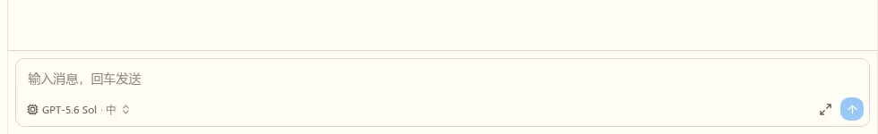
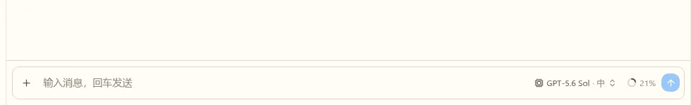
+、占位文字、模型 · 推理档、上下文 21%、发送。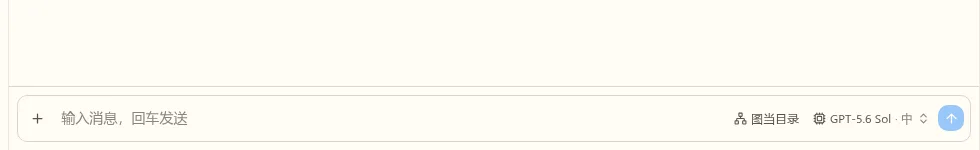
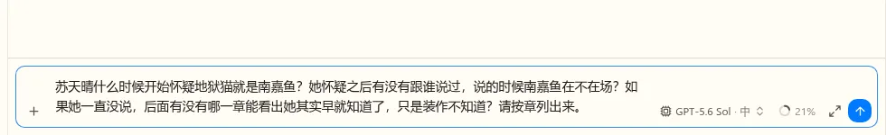
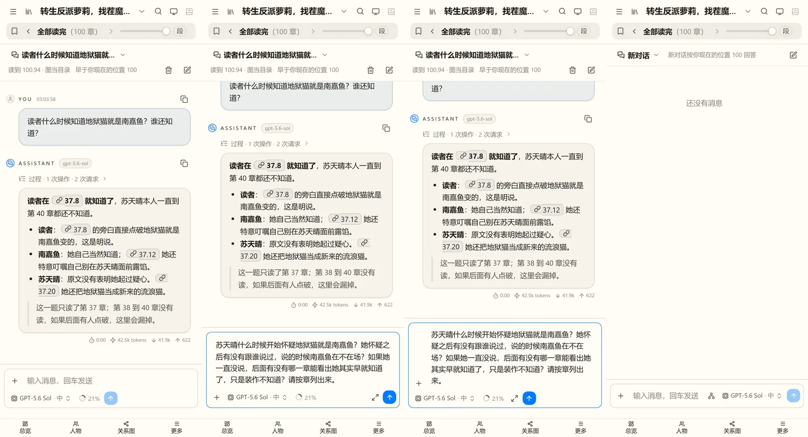
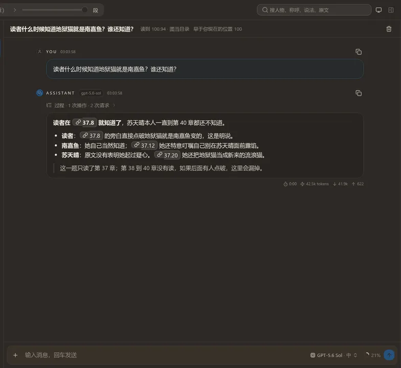
说明输入框里的几个控件（按已定的做，不用答）
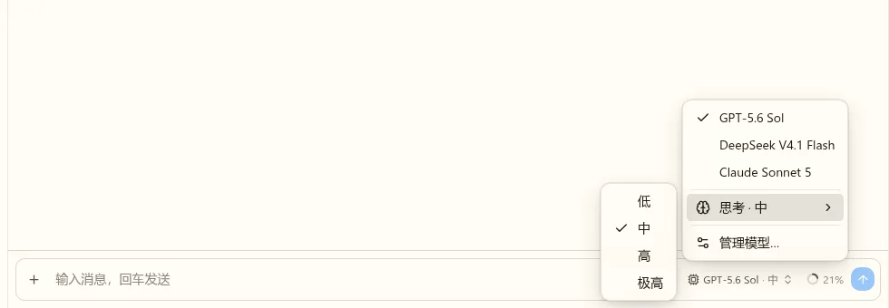
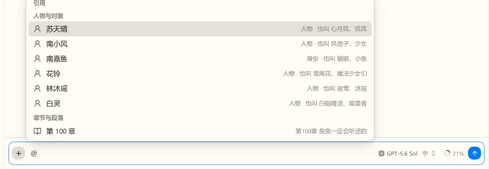
+ 在正文末尾插入 @，打开同一个引用菜单。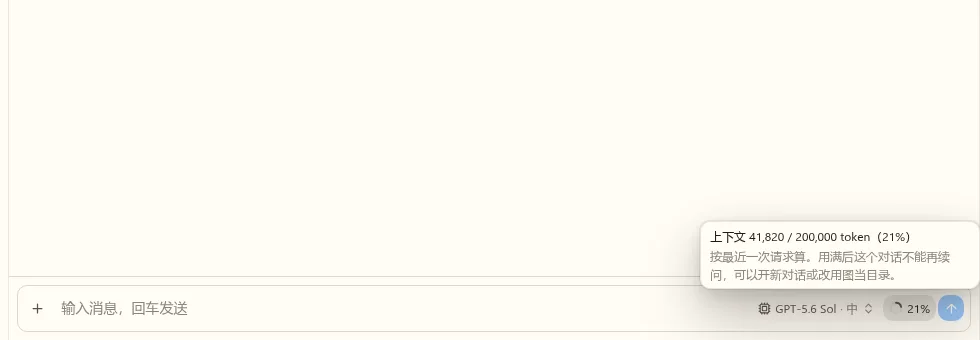
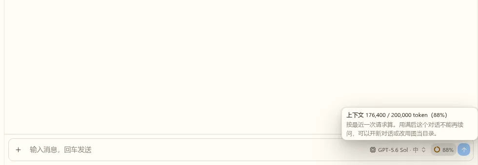
待定2. 模型目录：左右两栏，还是一个搜索框加分组列表？
OMP 自带目录有 69 个服务商、几千个模型（OpenRouter 一家 525 个）。从设置页“添加模型…”打开，选中后加入候选。这个界面做进 nb-agent-ui，数据由宿主给，以后 NeuroBook 也用它。
A 左边服务商、右边模型表
先挑服务商，再在表里比上下文、推理、图片、单价。适合逛；找某个模型要先知道它在哪一家。
B 搜索框加分组列表（推荐）
一打开就能搜，按服务商分组，密钥已设置的排在前面，可以只看已设置的。手机上也能用。
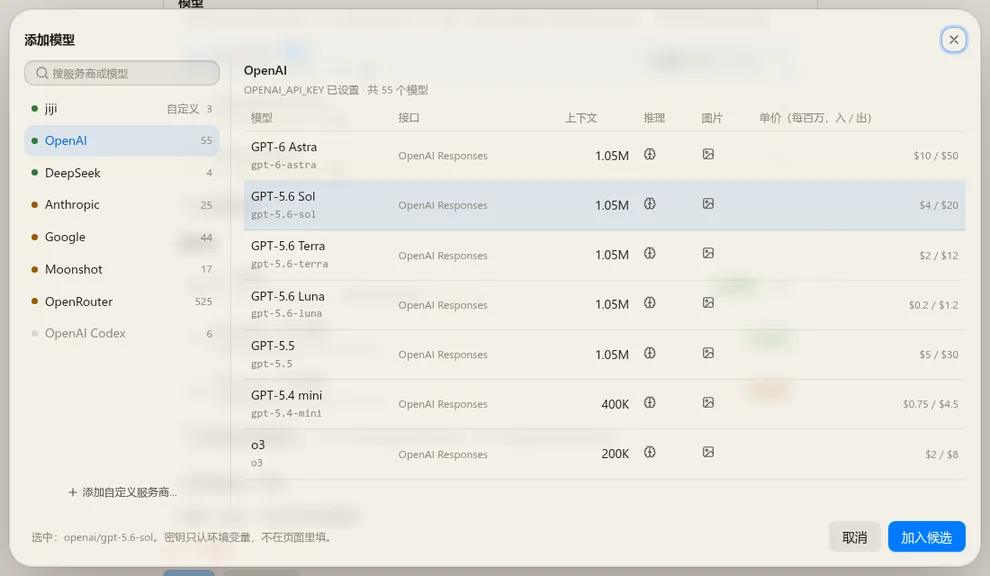
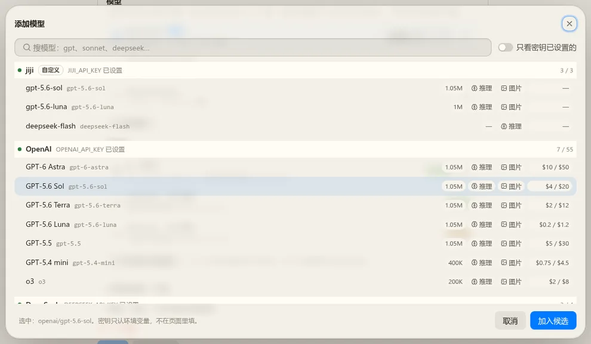
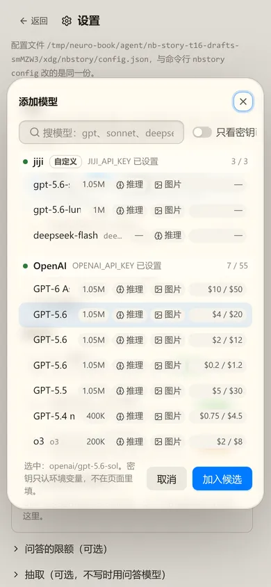
待定3. 设置页“模型”一节的结构
现在问答模型是表单里手填的地址、模型名、密钥变量名。改成：
- 候选模型：输入框里能换的几个，其中一个是默认（打勾）；默认的那个旁边设推理档。“添加模型…”打开上面的目录。
- 服务商：候选用到的服务商，写密钥变量名与有没有值。OMP 目录里的不用添加；自定义的可以编辑。
- 自定义服务商：名称、接口（Chat Completions、Responses、Anthropic、Gemini）、地址、密钥变量；模型可以从服务读列表，也可以手动添；目录认得的模型名自动带出上下文、推理档与图片支持。
- 密钥照旧只认环境变量，不在页面里填。限额与抽取还是原来的表单，收在下面。
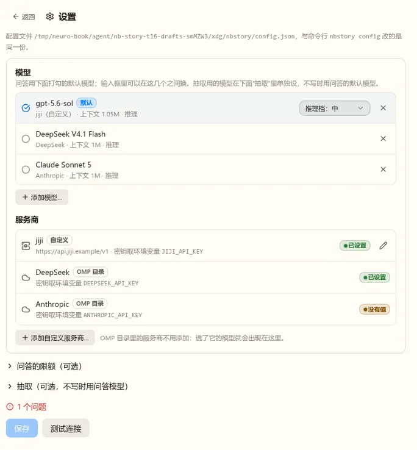
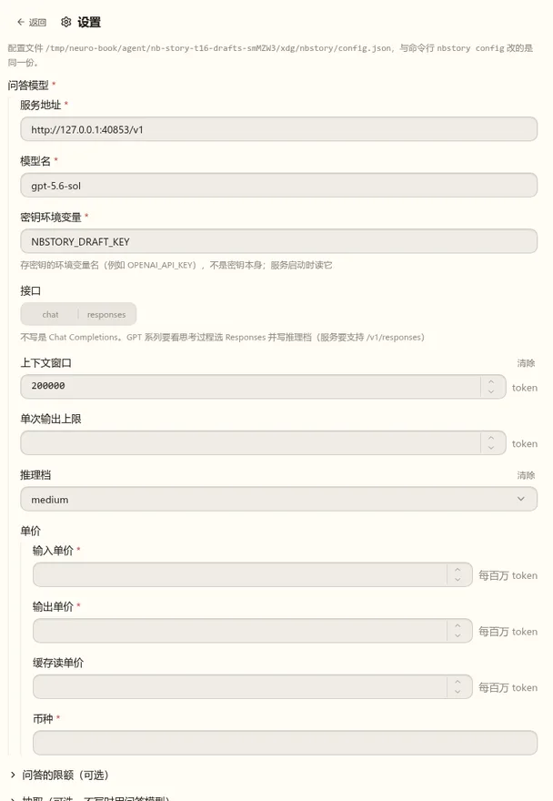
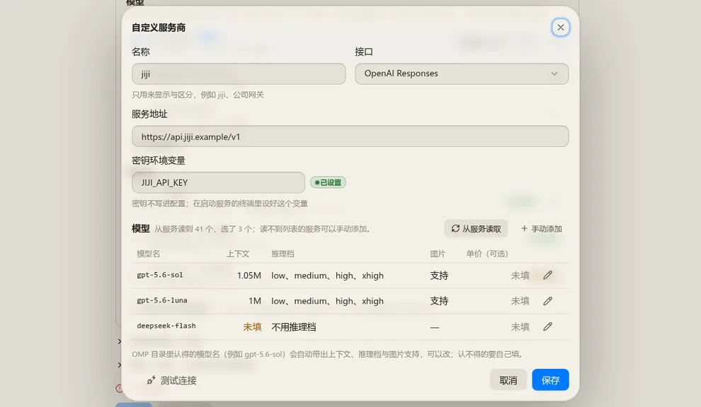
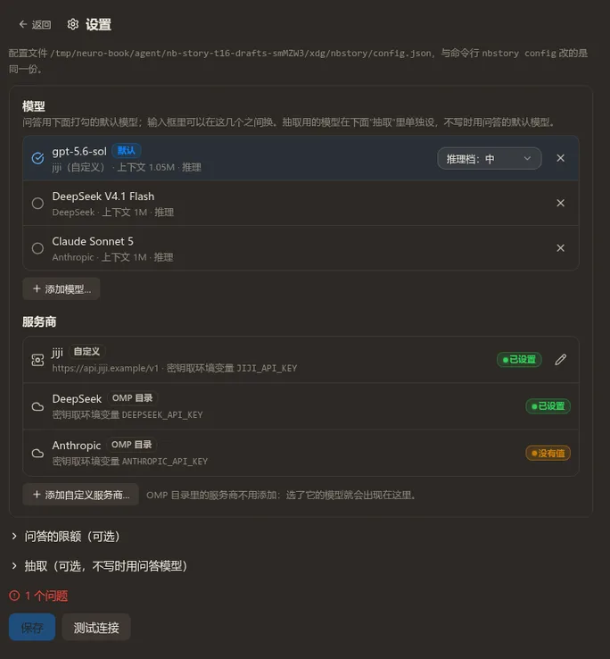
配置文件跟着变：model 换成候选列表加默认项，服务商单独一节；命令行 nbstory config 一起改，旧的单个 model 读进来时当作一个自定义服务商加一个候选。
待定4. 目录里列哪些服务商？
nb-harness 经 OMP 发请求，OMP 认得 Anthropic、Gemini 等接口；但 nb-story 到现在只验证过 OpenAI 兼容的两种（本机假端点），别的接口要等有密钥时用真实模型试。
全部列出，要登录的除外（推荐）
ChatGPT 登录、Copilot、Cursor 这类要登录的灰掉、不能选。没验证过的接口照常可选，第一次用出错时按现有的错误归类报出来。
先只列 OpenAI 兼容的
Chat Completions 与 Responses 两种；Anthropic、Gemini 等等验证过再放开。
待定5. Markdown 回复里出处不对时，要不要自动让模型改一次？
上面截图里的回答就是 Markdown 作答的样子（出处写成“章.段”，点开在抽屉里看原文）。结构化作答交卷时会校验出处；Markdown 回复现在只能事后标出没核实的出处。
改一次（推荐）
回复写完、这一轮要结束时检查出处：没读过或晚于阅读位置，就带着问题清单让模型接着跑一次（它可以先读原文再重写）。重写的作为结果，第一次的留在过程里；还不对就照旧标出来。只在真有问题时多花一次请求。
不改，只标出来
和现在的文字回复一样。
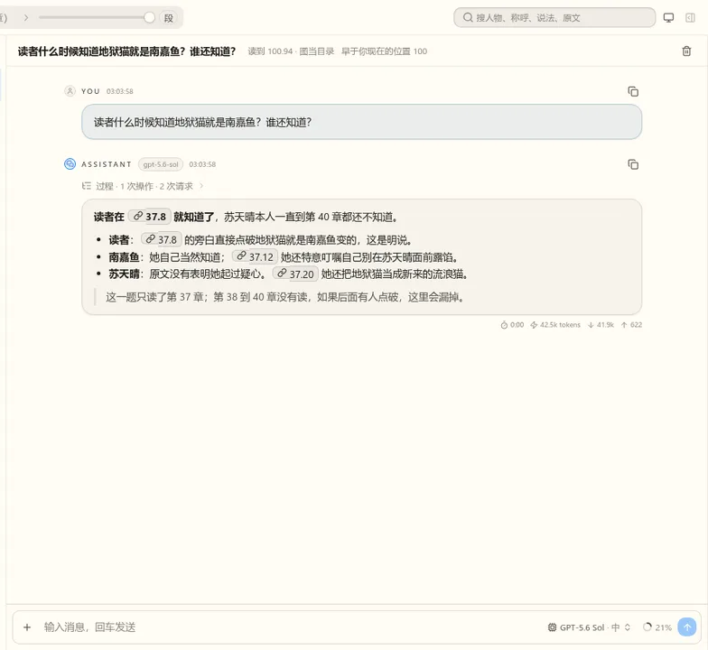
说明顺带发现
- 问答页从来没打开“能改运行设置”，模式按钮一直是禁用的：网页上新对话切不到全读，e2e 也没测。这次一起修，并补 e2e。
- 推理档在模型下拉的子菜单里，要点两下。如果你想把推理档单独做成一个按钮，答第 1 题时在备注里写。